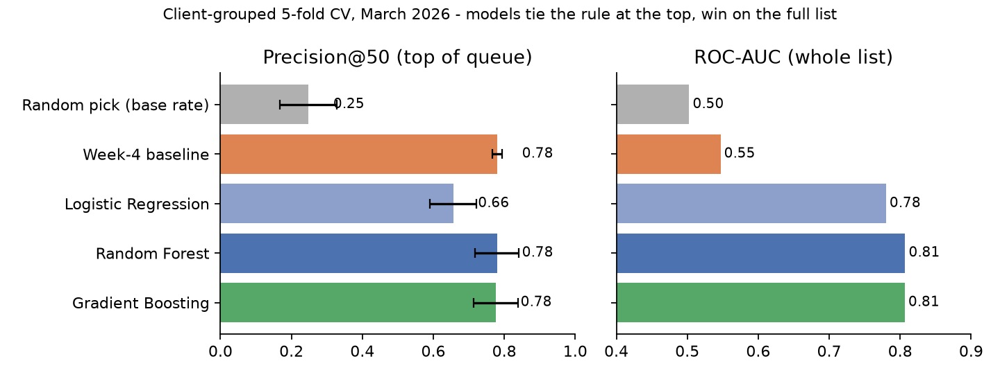
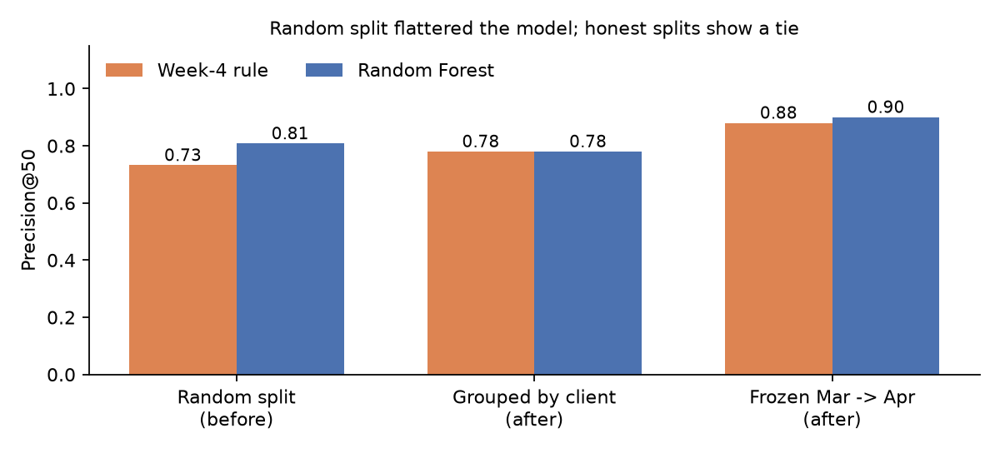
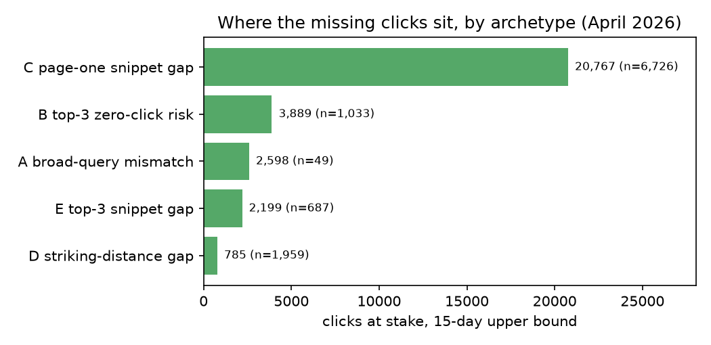
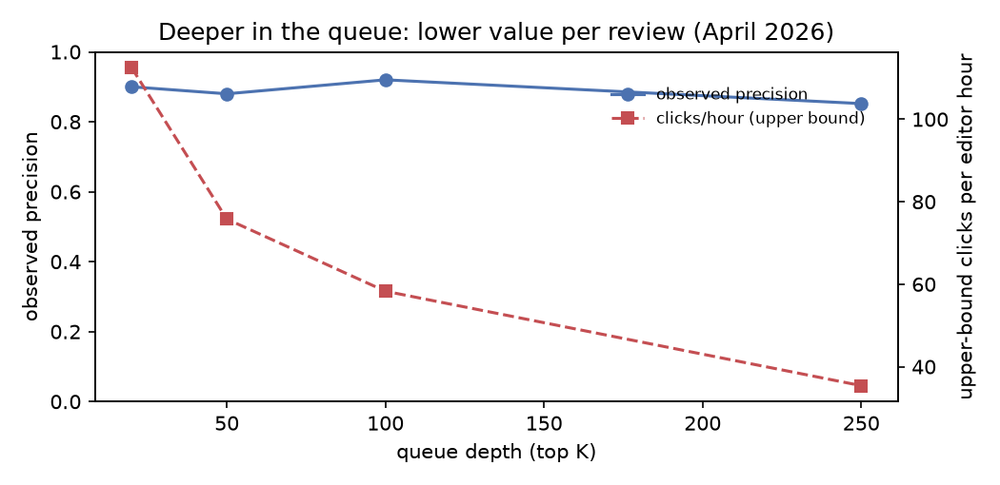

Research paper · FlyRank ML Internship · Applied Search Intelligence
Which visible pages under-capture clicks for their search position?
A validated, human-reviewed review queue built on 79 million rows of pseudonymised search data
Abstract
FlyRank's content product already flags visible pages with weak click-through for a "Fix CTR" review, and since editors have only a few hours a week, this study asks which already-visible pages are getting clearly fewer clicks than pages at a similar position, and which should be reviewed first? Using the pseudonymised FlyRank internship warehouse (one row per page per day), I scored about 57,000 visible pages from 36 sites in March 2026 on their first-half-of-month numbers, and labelled whether each page kept under-clicking in the second half. A transparent rule — clicks at stake = the gap to the typical CTR for the position × impressions — reached a Precision@50 of 0.78 on sites it never saw, roughly three times the 0.25 random-pick rate; Random Forest and Gradient Boosting tied it at the top of the list (0.78) but ordered the full list much better (ROC-AUC 0.81 vs 0.55). Frozen on March and applied once to April, both held up (0.88 rule, 0.90 forest), while a naive random page split had overstated the model by about three points. The output is a decision-support playbook — a ranked queue with reason codes, actions, human-review rules and monitoring triggers — that tells an editor where to look first, not what a rewrite will achieve.
1Introduction
Picture an editor on a Monday with forty minutes per page and a list of two thousand pages that already rank on Google. Some of them are seen tens of thousands of times a fortnight and almost never clicked. Which ones deserve the afternoon?
The obvious answer — sort by lowest click-through rate (CTR) — fails because CTR depends heavily on position: 0.3% is respectable at position 15 and poor at position 2. Small pages make it worse, since one click moves their CTR by a whole point. A fair list has to compare each page with pages like it, and weigh how much is actually at stake.
Case study: FlyRank's CTR-fix triage
FlyRank helps brands publish and maintain search content at scale, and its product surfaces pages for attention with transparent, hand-tuned rules — workflow labels such as Healthy, Fix CTR and Fix Content (described in FlyRank's March 2026 State of AI-Driven SEO report as triage cues, not quality verdicts). A CTR-type rule looks roughly like "a page with ≥500 impressions, an average position of 1–20 and CTR under 0.5% deserves a look". That is a sensible starting point, but a single CTR cut-off treats position 2 and position 18 the same, and nothing checks whether the flagged pages keep under-clicking.
This paper is a case study of that problem on FlyRank's own pseudonymised portfolio data. It replaces the fixed cut-off with a position-adjusted expectation, ranks pages by the clicks they are missing, and — the part a rule alone cannot do — measures the flag against the following fortnight on sites it has never seen. The findings map straight back to the product question: the position-adjusted rule is the strongest simple triage (P@50 0.78 vs 0.25 at random), the naive "lowest CTR first" ordering is weaker deeper in the list, learned models add value for ordering the whole portfolio rather than the top of it, and some "Fix CTR" pages (huge exposure, informational top-3 results) need a search-intent or results-page check before anyone touches the title.
This paper asks: which visible pages under-capture clicks for their position, and does a ranking of them keep pointing at the right pages on sites and in weeks it has never seen? The answer is a ranked review queue for humans — decision support, not automation.
2Data
All data comes from the FlyRank ML Internship warehouse release (build v20260703), hosted on Hugging Face. Every client, page, keyword and URL identifier is pseudonymised; no client names, domains, URLs or search queries exist in the release, and none appear in this paper.
| Item | What I used |
|---|---|
| Tables | fact_content_daily_performance (one row = one page per day; ~78.8M rows overall), joined to dim_content for content type, intent and creation date |
| Development month | March 2026 — decision day 16 March; features from 1–15 March, outcome from 16–31 March |
| Test month | April 2026 — same design, decision day 16 April, scored once |
| Sealed | June 2026 (the release's final month) — never touched |
| Population | Rows with gsc_data_available IS TRUE; average position 1–20; ≥100 impressions in both halves of the month → 57,392 pages / 36 sites (March), 59,532 / 43 (April) |
| Excluded | Google Analytics columns (zero-filled before each site's tracking began); content_updated_date (an export-time value that falls after the decision day for 82% of pages); product-workflow fields; keyword/URL hashes (used for grouping only) |
Three facts were verified by query before any modelling: the daily table has zero duplicate page-day keys; March holds 9,841,378 rows across 331,437 pages and all 31 days; and only 36.7% of those rows carry Search Console data — the rest are page-days with no search row, not page-days with zero interest.
3Methodology
Label — observed later, not defined by a rule on the same numbers
A page is labelled under_captures_next = 1 if, in the second half of the month, its CTR is below half the median CTR of its position bucket (1–3, 4–10, 11–20). Features only ever see the first half. The label is a proxy for "keeps under-clicking", not for "would gain clicks after a rewrite". In March 39.8% of pages carry the label; in the ≥500-impression pool an editor would actually work from, 26.6%.
Features — all knowable on decision day
Impressions (log), CTR and impression-weighted position from days 1–15; content type; page age at the decision day; and two derived from the same window — the position bucket's median CTR (expected CTR) and the page's CTR divided by it.
Baseline — the rule every model must beat
Before modelling, two signals were checked: the CTR-vs-position gap was CONFIRMED (pages under 25% of expected repeated the pattern 67% of the time vs a 40% base rate, monotonic across buckets), while volume was MIXED (small pages repeat more, so the volume floor is about impact, not reliability). The frozen rule: pages with ≥500 impressions and CTR below half of expected get a score of clicks at stake = (expected − actual CTR) × impressions, reason code low_ctr_for_position.
Models and validation
Logistic Regression, Random Forest and Histogram Gradient Boosting (seed 42) predict the label; their probability is the ranking. Validation is GroupKFold(5) by site — no site's pages are in both training and test — plus a time-forward test: rule and model frozen on March and scored once on April. The headline metric is Precision@50 inside the ≥500-impression pool (one editor's weekly capacity), always shown with its base rate; ROC-AUC on all pages is secondary.
Leakage checks
- Positive control: adding the outcome CTR on purpose sends ROC-AUC to 1.000 (March) and 0.997 (April) — the harness catches leaks; honest scores are 0.80–0.81.
- No "too good" feature: the strongest single feature (CTR) reaches AUC 0.739.
- Dates: no page was created after its decision day; the post-decision update date is excluded.
- Disclosed choices: the population needs ≥100 outcome-window impressions (7% of eligible pages dropped), and the bucket medians are computed over all pages rather than per fold (a mild, label-free transductive effect).
4Results
The tension in this project: the learned models are clearly better at ordering pages overall, but the editor only reads the top of the list — and there, the rule holds its ground.
| Method (5 client-grouped folds, March) | P@50 | ± fold std | P@20 | ROC-AUC |
|---|---|---|---|---|
| Random pick (pool base rate) | 0.25 | 0.08 | 0.33 | 0.50 |
| Week-4 rule (clicks at stake) | 0.78 | 0.01 | 0.80 | 0.55 |
| Logistic Regression | 0.66 | 0.07 | 0.70 | 0.78 |
| Random Forest | 0.78 | 0.06 | 0.83 | 0.81 |
| Gradient Boosting | 0.78 | 0.06 | 0.82 | 0.81 |

What the models lean on (permutation importance): impressions first, then the CTR-to-expected ratio and CTR itself — in other words they rediscovered the rule's signal and added volume. Their most confident misses are pages with huge impressions and near-zero CTR whose click rate bounced back the next fortnight, consistent with a shifting query mix rather than a fixed snippet problem.
Does it survive honest validation?

Reading the April number carefully: April was higher for both methods, so its top under-capturers were simply more persistent that month. A single run of 50 pages carries roughly ±0.05 of noise; the conservative expectation is the client-grouped 0.78.
5Limitations & honest framing
- Not causal. The data shows which pages kept under-clicking, not that editing them produces clicks. That needs a before/after test against comparable untouched pages.
- Narrow window. One development month, one test month, a two-week outcome, 36–43 sites. Two months are not a trend.
- The yardstick moves. Typical CTR per position fell between March and April by 19–60% depending on the bucket — "expected CTR" must be recomputed every cycle, and "clicks at stake" is an upper bound, never a forecast.
- Invisible causes. Answer boxes, AI overviews and ads that take clicks are not in the data, so a low CTR is never proof of a weak page.
- Selection and concentration. Pages that vanished from search in the outcome window are not scored (7%); one site can own 32–38% of the top 50.
- Page age is not a clean lever here. Under-capturing peaks at 3–6 months (47% vs a 41% base rate) rather than following a decay cliff; this is directional only.
6Ranked recommendations
The April queue holds 11,823 pages. Each gets exactly one archetype, one reason code and one action — and every action starts with a human check.
| Archetype (first match wins) | Pages | Clicks at stake* | Action |
|---|---|---|---|
| A. Huge exposure, tiny CTR (≥20k impressions, <25% of expected) | 49 | 2,598 | Review search intent: which queries drive the impressions? Re-target or accept. |
| E. Top-3, non-informational | 687 | 2,199 | Review title & meta (largest upside per impression) |
| C. Page one (positions 4–10) | 6,726 | 20,767 | Review title & meta; sharpen the promise to the query |
| B. Top-3, informational | 1,033 | 3,889 | Check the live results page first — an answer box may be taking the clicks — then monitor |
| D. Positions 11–20 | 1,959 | 785 | Improve relevance and internal links; a snippet alone won't help on page 2 |
| M. Model-only watch (not flagged by the rule) | 1,369 | — | Monitor only; re-check next cycle |
* 15-day upper bound if each page reached the typical CTR for its position — for prioritising, not a forecast.


Human review, every time
- Open the live results for the page's main query — if a results feature explains the gap, monitor instead of editing (mandatory for A and B).
- Read the current title and description against the intent; rewrite only if unclear or mismatched.
- Skip pages changed in the last 30 days; check whether one site dominates the list (a template fix beats twenty page edits).
- Log the page, action, date and before-CTR, so the next cycle can measure what actually happened.
Never automate: publishing rewritten titles (including AI-written ones) without a human; deleting, noindexing or redirecting pages because they appear here; site-wide template changes from model output; reporting clicks at stake as expected gains; editing from the model-only list; acting on pages below 500 impressions.
Monitoring and retrain triggers
Run monthly: queue Precision@50 below 0.60 (or below 0.70 twice) → revisit thresholds; any position bucket's expected CTR moving more than 30% → recompute medians; input drift (PSI) above 0.25 → retrain the second-opinion model; one site above 50% of the top 50 → split the queue by site. On the first run (March → April) precision held at 0.88 and input drift was tiny (PSI ≤ 0.04), but the expected-CTR trigger fired — the reason the playbook recomputes it every month.
7Reproducibility
Everything is in the public repository ShayanAhmed12/flyrank-internship-ml. Every number on this page traces to a committed metrics file in work/outputs/, and every chart is rebuilt from those files by the capstone notebook.
| Step | Notebook | Receipt |
|---|---|---|
| Research question | w01_research_question | — |
| ML task framing | w02_ml_task_framing | — |
| Data contract | w03_data_contract | — |
| Baseline | w04_baseline_score | w04_baseline_metrics.json |
| Models | w05_model | w05_model_metrics.json |
| Validation audit | w06_validation_audit | w06_validation_metrics.json |
| Playbook | w07_action_playbook | w07_playbook_metrics.json |
| This paper's charts | capstone | reads all four |
To rerun: request access to the gated dataset and log in with a read token (hf auth login, or an HF_TOKEN secret in Colab), install requirements.txt, then run the notebooks in order. Seeds are fixed at 42; results were produced with scikit-learn 1.9.1 and pandas 3.1.1 (tree ensembles can shift by a point or two across library versions). The ranked queue CSV is regenerated by the playbook notebook and kept out of git by design.
8Acknowledgments & data credit
Built on the FlyRank ML Internship dataset — flyrank.ai. The pseudonymised warehouse release, the starter pipeline and the course material came from the FlyRank ML Internship; the methodology questions in my validation audit were sharpened by reading FlyRank's own State of AI-Driven SEO in Numbers (March 2026) report. Any errors of analysis or interpretation are mine.